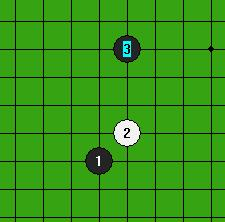

正在讨论中的无禁手、两次交换规则
#1 正在讨论中的无禁手、两次交换规则 作者：有志青年 发表时间：2007-7-7 10:16:23
我也是刚刚得到提交给中国棋院的规则修改意见稿，现将部分节选提供给大家传阅讨论。
节选如下：
1.1 无禁手、两次交换规则（简称为规则A）★★★★★
这是笔者非常推荐的一款规则，并认为是目前新规则提议中最好的一款。
两次交换，是指在开局阶段，简单的说，就是棋手甲先连续走前三手棋，棋手乙可选择交换；之后乙再连续四手棋，由甲选择执黑执白。具体描述如下：
采用无禁。假先手方（以下简称为A）先走三手（黑1、白2、黑3），位置和形状不限，假后手方（以下简称为B）有权选择行棋权。假后手方选择后，假后手方再走四手（白4、黑5、白6、黑7），另一方有权选择交换。
具体过程可举例说明：
情况一：假设A是假先方，B是假后手方。对局开始后，A先连续走三手（黑1、白2、黑3），B选择行棋权，则B连续走四手（白4、黑5、白6、黑7），A有权选择执黑或白。之后，至第8手开始正常行棋。
情况二：假设A是假先方，B是假后手方。对局开始后，A先连续走三手（黑1、白2、黑3），B不选择行棋权，则A再连连续走四手（白4、黑5、白6、黑7），B有权选择执黑或白。之后，至第8手开始正常行棋。
具体过程可参见下图：

当然，对于有一定基础的棋手，比如由我的对手开局走前3子，那我十有八九是要交换过来走后四手的。为什么呢？因为如果不交换，相当于让对方连前摆7手——7手棋，就足以设计一个大的圈套了，圈套也许是平衡的，但很容易走错。在这个圈套的局面下，前十几手甚至几十手他都可以事先的准备和研究，而我为了避免那些陷井，就要一一计算，即使我临场全算出来、走成了平衡，时间上也大大地吃亏了；而如果我来走后四手就不同了，因为他无法得知我的后4手，因此无从准备。并且，如果由我来走后4手，那么我就可以选择我习惯的局部棋型，对我还是相对有利的。
因此，这种规则，在高手的对局中，第一次交换总是会被用到的。
这种规则的优点是：
1.1.1 无禁
由于无禁，能吸引大量爱好者和普通玩家。
1.1.2 平衡性
这无疑是平衡的，因为双方各有一次交换权，并且都是至少3手的定型权，如果任何一方走出的变化是不平衡的，那么对方都将选择有利的一方。（当然，在大多数情况下，无论前3手怎么走，后4手都应该可以将其平衡的。）
换而言之，这个规则是没有禁手并且平衡的。
1.1.3 平等的定型权
因为双方都有定型的权利，所以双方定型权是平等的。这样，就不会出现3.3中提到的问题了——因为假先方虽可以走前3手，但由于假后方有后4手，组合量太大，因此假先方无法就对方的后4手进行准备；而假后方虽有4后定型权，但因为不知道假先方的前3手将走在何处，更无法进行准备。
（这里要小小地说明一下：为什么是3+4手呢？由于假先方先落三子，因此，假先方有着优先定型和选择战场方向之利，因此后手方（后4手）要多一子的定型权，这样对双方就是比较公平的了。）
1.1.4 变化量极大丰富了
由于取消了第一手必须走天元的限制，自然大大地丰富了变化量，这只是小一部分。
又由于假后方后4手定型权变化量较大，可以使得绝大多数前3手处于平衡，因此可下变化就大大增加了。举例子说：浦月开局在现行规则下是黑必胜的，即使加上"五手两打"也仍是必胜的，因此比赛中鲜有棋手使用，相当于不可下的。
然而在两次交换规则下就不同了，即使是浦月开局(无论是棋盘的中心区域还是在棋盘的盘端区域)，假后方的4手棋足以制造一个平衡局面来，这样，浦月局就变得可下了。这只是一个例子，把所有类似的情况都加起来，将增加多少可下的变化呢？
无疑，变化量极大地丰富了。预计，这种规则下的变化量，即使和国象相比，也是有过之而无不及的。
1.1.5 规则表述简单
规则的表述非常简单。本规则在民间规则的基础上，只引入了"交换"的概念，即，对普通玩家来说，只需要再了解交换。这样，对爱好者来说，就容易接受得多了。
1.1.6 对局难度增大
如果没有分析错的话，在这种规则下，高水平对局难度将大大增加。笔者曾用这样的规则和许多二段以上的专业棋手进行对弈，普遍地感觉是：难！不容易把握！
这才发现，其实大家的水平并没有那么高。其实，以前是依靠了大量的开局定式，弥补了中盘的不足，一个定式下来，几十手，空间方面占了半个棋盘，中盘计算量相对大大地少了。
#2 Re:正在讨论中的无禁手、两次交换规则 作者：逆刃 发表时间：2007-7-7 10:37:38
看了 ...
#3 Re:正在讨论中的无禁手、两次交换规则 作者：yuelee 发表时间：2007-7-7 10:39:31
 除了成5没变，一人一手棋没变。其他的，都变了。。。。革新的好彻底
除了成5没变，一人一手棋没变。其他的，都变了。。。。革新的好彻底
#4 Re:正在讨论中的无禁手、两次交换规则 作者：无尽 发表时间：2007-7-7 13:21:04
是的，实践过就知道了。#5 Re:正在讨论中的无禁手、两次交换规则 作者：江南新绿 发表时间：2007-7-7 15:08:39
也亏的这帮人了。什么都敢拿出来，也不怕人笑话。
很显然这个规则不具有复杂性，具有最后选择权的棋手甲可以选择策略达到必胜。
#6 Re:正在讨论中的无禁手、两次交换规则 作者：江南新绿 发表时间：2007-7-7 15:13:55
顺便说一句，每次讨论规则，麻烦多写几个字，不注意细节，于关键处可以做随意想象是很多规则的硬伤。
#7 Re:正在讨论中的无禁手、两次交换规则 作者：黄药师 发表时间：2007-7-7 16:07:53
太复杂了！原来的规则蛮好的！
#8 Re:Re:正在讨论中的无禁手、两次交换规则 作者：xr__ 发表时间：2007-7-7 17:05:32
引用：
原文由 江南新绿 发表于 2007-7-7 15:08:39 :很显然这个规则不具有复杂性，具有最后选择权的棋手甲可以选择策略达到必胜。
很显然 江南新绿 想都懒得想，是随口说出来的！
不然怎么会有这么可笑的结论！
#9 Re:正在讨论中的无禁手、两次交换规则 作者：江南新绿 发表时间：2007-7-7 17:38:49
假先手方（以下简称为A）先走三手（黑1、白2、黑3），位置和形状不限，
如果是我先下，三个棋，a1，a14，o1，这样的位置，分布在三个最角落里面，剩下xr_想想看,怎么放才够平衡呢?
#10 Re:正在讨论中的无禁手、两次交换规则 作者：xr__ 发表时间：2007-7-7 17:45:26
呵呵！随便在哪个部位放个4手都行啊！！
如4、5、6、7 分别在M13、K11、J11、I10
其它摆法更多，其实先手不该这么摆，这样只会增加后手研究优势！
#11 Re:正在讨论中的无禁手、两次交换规则 作者：江南新绿 发表时间：2007-7-7 17:52:03
当然,也许通过一段时间,你可以想到存在的一种组合是可以平衡的.但请计算你的时间.
设计一个开局难还是按照某个开局开始计算比较难.是否这个规则会变成考开局的游戏.至少到此时为止,这个规则没有经过测试.是否经过一段时间的变化,会比较稳定下来.规则是否会继续震荡.是否能坚持50年不变.
#12 Re:正在讨论中的无禁手、两次交换规则 作者：游戏人间 发表时间：2007-7-7 19:59:11
这个....11楼那个表随便摆...黑必胜的..后手不会自杀吧#13 Re:正在讨论中的无禁手、两次交换规则 作者：xr__ 发表时间：2007-7-7 20:28:23
楼上不要张口闭口，什么必胜，就算可能是必胜，也不会比松月简单！！
后手我这样摆就是我熟悉，而先手不熟悉绝不会占什么便宜！！
所以先手这样摆是很搞笑的
#14 Re:正在讨论中的无禁手、两次交换规则 作者：游戏人间 发表时间：2007-7-7 20:45:02
这种局部形状我比你熟...黑杀不掉就是水平问题咯
#15 Re:Re:正在讨论中的无禁手、两次交换规则 作者：游戏人间 发表时间：2007-7-7 20:50:52
11楼那个我说的是有禁的情况下必胜...这个规则貌似是无禁的..结果如何可想而知#16 Re:正在讨论中的无禁手、两次交换规则 作者：游戏人间 发表时间：2007-7-7 20:57:16
初步看了下这个规则真的容易沦为边角战斗..甚至对局很可能都不超过三十手就可以分出胜负..除非经过长时间的研究找出各个角落均衡的下法..当然我说的是有禁的情况下采用这个规则..无禁黑方前三手可以策略性必胜
#17 Re:正在讨论中的无禁手、两次交换规则 作者：无尽 发表时间：2007-7-7 21:23:39
假先方对自己任意的前三手如果研究得很充分，假后方就很难下了，无禁更甚。尤其不利于初学者，他哪能算那么多？#18 Re:正在讨论中的无禁手、两次交换规则 作者：xr__ 发表时间：2007-7-7 22:09:29
我只是举个例子，平衡的四手有多少种啊！你不要说你都研究了#19 Re:Re:正在讨论中的无禁手、两次交换规则 作者：xr__ 发表时间：2007-7-7 22:15:00
引用：
原文由 游戏人间 发表于 2007-7-7 20:57:16 :初步看了下这个规则真的容易沦为边角战斗..甚至对局很可能都不超过三十手就可以分出胜负..除非经过长时间的研究找出各个角落均衡的下法..当然我说的是有禁的情况下采用这个规则..无禁黑方前三手可以策略性必胜
平衡跟禁手又有什么关系！很难想象，一个认为要靠禁手才能平衡的棋手，能下出就样的必胜！
只有一个可能，说假话！
#20 Re:正在讨论中的无禁手、两次交换规则 作者：游戏人间 发表时间：2007-7-7 23:41:52
恩恩...我在说假话呢~~飘过~
#21 Re:正在讨论中的无禁手、两次交换规则 作者：江南新绿 发表时间：2007-7-8 9:58:31
1
11楼中提到
其它摆法更多，其实先手不该这么摆，这样只会增加后手研究优势！
我觉得棋手甲的最佳策略可以这样选择，因为棋手甲具有最后选择权。
此外就11楼中提到“先手”“后手”的容易引起误会。细节问题。
--------------------------------------------------------------
2
如果开局比较稳定之后，那么随之而来的就是全局如何平衡的问题。无禁的规则更容易控制和扩大先手的优势，没有了禁手这个规则上的设计，那么很容易导致一边倒的情况，接着的情形就是大家肯定会寻找在开局上细小的优势。所以一旦这个规则的开局稳定，这个规则又会面临危机。
#22 Re:正在讨论中的无禁手、两次交换规则 作者：江南新绿 发表时间：2007-7-8 10:05:39
1楼的最后一句话是这么说的。
“如果目前的大部分棋手都感觉很能把握局面的话，这才是一件反常的事情。”
这句话一说，就令人费解了，到底谁想改规则和规则为谁服务呢？
楼下的同志们，你们说呢？
#23 Re:Re:正在讨论中的无禁手、两次交换规则 作者：xr__ 发表时间：2007-7-8 10:41:30
引用：
原文由 江南新绿 发表于 2007-7-8 9:58:31 :我觉得棋手甲的最佳策略可以这样选择，因为棋手甲具有最后选择权。
2
如果开局比较稳定之后，那么随之而来的就是全局如何平衡的问题。无禁的规则更容易控制和扩大先手的优势，没有了禁手这个规则上的设计，那么很容易导致一边倒的情况，接着的情形就是大家肯定会寻找在开局上细小的优势。所以一旦这个规则的开局稳定，这个规则又会面临危机。
--------------------------------------------------------------
你的水平高！所有的四手，你都能选出优的一方，然后走出必胜！！
开局平衡之后，中盘无禁会更平衡！有了禁手，双方规则不平衡，中盘后白方会慢慢优起来！！
不客气的说，无禁的中盘才是平衡的，双方平等！ 不象禁手中 一方要攻，攻不下来就劣势了！
开局平衡的话，前提是已经平衡了（平衡掉了一子之优），哪来的一子之优。
#24 Re:正在讨论中的无禁手、两次交换规则 作者：游戏人间 发表时间：2007-7-8 10:48:39
其实规则的更改大部分还是为现在的的专业棋手服务的...一般的爱好者RIF规则都没研究透呢就跟着起哄咯....本来都不想回咯..被人打击了一下..说我无聊的去下无禁咯..其实规则不管怎么改..对形状的理解和细腻的计算永远是五子棋的精髓..如果RIF下不好那么改成什么规则一到了中盘还是不行的..比如XR前面所摆的图..毫不夸张的说他对形状的理解根本还不到位.就那个形状来说黑已经把白棋压缩到了一角,有禁的话白也许还可以在局部利用禁手的牵制来限制下黑棋.但是无禁白棋在局部根本毫无威胁.不管白走在哪里黑都可以在靠近天元的一侧落子.基本上用不了多少手黑将牢牢控制住白向外发展的线路.那个时候白只有等死.这样的局面是根本不需要计算的.第一感觉就会告诉你是黑胜还是白胜咯.XR同学却不知道.这不能不说明他对形状的理解很有问题,至于说我只能依靠禁手来取得平衡.这话不假因为我目前还是没想出失去了对黑棋禁手的限制白如何在后手的情况下能反先甚至取胜的..当然可能是我对规则研究的不够所以想不出来.所以请大家告诉我.至于这里讨论的这个规则.前面江南同学摆的前三手可以说是完全否定这个规则的下法..有人认为这样会增加后手研究优势..这个基本不会存在的..还是前面那句话..当你对局部的任何形状都理解透了.计算也不会很烂的话那么后手P的研究优势都不会有..四手棋已经足够给出谁优势大的局面了..#25 Re:正在讨论中的无禁手、两次交换规则 作者：无尽 发表时间：2007-7-8 11:23:22
实战实战吧，他们不可理喻的，嘿嘿
“不客气的说，无禁的中盘才是平衡的，” ---你说平衡就是平衡，太好笑了
“不象禁手中 一方要攻，攻不下来就劣势了！”---这只能说明你对攻守转换理解不够
简单的一个问题，你有多少高质量和数量的的研究成果说你们的无禁规则平衡？根本拿不出研究，想当然地自吹自擂。就算你们实战过，但还是要看你们本身的水平、研究的水平才知道的，不要以为自己走几下觉得平衡就真的平衡了。
加一句，我不是反对改革，不要随便给别人戴帽子，质疑你们好像就是为现行规则辩护。
#26 Re:正在讨论中的无禁手、两次交换规则 作者：游戏人间 发表时间：2007-7-8 11:38:30
我也来PS一下:开局平衡之后，中盘无禁会更平衡！有了禁手，双方规则不平衡，中盘后白方会慢慢优起来！！
如果没有了禁手的限制..白方确实没有慢慢优起来的机会了..会迅速地死翘翘~当然..也可以先摆出个白优的四手..那个结果就是黑方会死翘翘..试问一个白棋连个积累优势都不给的棋种..谁会来下?
#27 Re:正在讨论中的无禁手、两次交换规则 作者：游戏人间 发表时间：2007-7-8 11:42:12
继续飘来PS一下:不客气的说，无禁的中盘才是平衡的，双方平等！ 不象禁手中 一方要攻，攻不下来就劣势了！
这个...有禁的情况我都能用黑控满盘到和棋...无禁嘛..爽啊
#28 Re:正在讨论中的无禁手、两次交换规则 作者：游戏人间 发表时间：2007-7-8 11:47:23
我发现我好墨迹...继续PS:你的水平高！所有的四手，你都能选出优的一方，然后走出必胜！！
这里要说下.如果是有禁的话确实没人能面对所有的四手在实战中迅速找出优的一方.但是无禁的情况下只要是对形状理解不太差的会迅速的找出优势的一方.让后利用交换权得到优势一方.之后慢慢积累这种优势.形成必胜只是时间问题..就算能找到确实不太好实战形成必胜的局面.在目前计算机的辅助计算下也会在很短的时间内终结到上百手.因为没有禁手了..那么计算机需要计算的东西少了很多.终结起来很EASY的~
#29 Re:正在讨论中的无禁手、两次交换规则 作者：无尽 发表时间：2007-7-8 11:50:46
再补充一下立场，现行规则是要改革了，办比赛来试验新的一些想法和规则是很重要的（在某个无禁讨论群里（有个叫自由精灵的人那个群）我就听到别人提起过有人说“规则不存在成熟的问题”真得太好笑了），我看不惯的就是那些不面对具体问题自吹自擂的人。#30 Re:Re:正在讨论中的无禁手、两次交换规则 作者：xr__ 发表时间：2007-7-8 11:51:15
引用：
原文由 游戏人间 发表于 2007-7-8 10:48:39 :
..四手棋已经足够给出谁优势大的局面了..
有多少个四手！你想过没有！ 实战中有这么多的四手，你没研究过都能拿下来！？怕是选哪方都会输吧。
要是这样的话，你早天下无敌了！
人家多少人研究一个变化都要几年！你能信手下来！ 你算是神还是人！
作为一个棋手还是谦虚一点，这样才会提高
#31 Re:正在讨论中的无禁手、两次交换规则 作者：腌肚卖力踢 发表时间：2007-7-8 11:52:03
对五子棋没有深刻认识与研究，只凭想当然就得出结论，没有任何意义。
给对方扣帽子，更是无聊的表现。
PS 补充鱼老师，就算不用计算机辅助研究，临场计算分支也少得多，更容易控制局面。要是用计算机辅助研究，无禁某一局面终结或是推到很后面比有禁简单太多了。。
#32 Re:正在讨论中的无禁手、两次交换规则 作者：腌肚卖力踢 发表时间：2007-7-8 11:53:10
回31楼，不要以为自己做不到，其他人也做不到。就前面的讨论来看，鱼老师对五子棋的理解和你不是在同一层次上的。
#33 Re:正在讨论中的无禁手、两次交换规则 作者：游戏人间 发表时间：2007-7-8 11:55:17
继续飘来~~PS:有多少个四手！你想过没有！ 实战中有这么多的四手，你没研究过都能拿下来！？怕是选哪方都会输吧。
不管有多少个四手..无禁黑都是优势大大的..所以我只需要确定当前是黑先手还是白先手就足够咯..如果这点我都做不到.我才真的是白下这么多年棋咯.还有..无禁的局面研究不需要多少年..只需要多少小时...
#34 Re:正在讨论中的无禁手、两次交换规则 作者：腌肚卖力踢 发表时间：2007-7-8 11:56:29
补充回31楼，研究几年是有禁难局的情况，而且走不出必胜，临场能脱谱控制的也大有人在，换成无禁的话。。
#35 Re:正在讨论中的无禁手、两次交换规则 作者：江南新绿 发表时间：2007-7-8 12:09:18
to24楼，
讨论所必须的客观和冷静，不带情绪是很重要的。我们在这里所谈的和个人经验应该是无关的。如果我们谈论是保险的问题，那么与个人驾驶技术高低是无关的。个人驾驶技术的高低完全不能解决保险是否存在和购买的合理性。所以你夸奖我水平高的帽子，带在规则是否合理的头上，我是不能接受的 ，如果你觉得合适，就带你自己头上吧。
你所说的
有了禁手，双方规则不平衡，中盘后白方会慢慢优起来！！
对，这样前半盘黑棋有优势，后半盘白棋有优势，所以才能够在胜率上达到平衡。
你所说的
开局平衡的话，前提是已经平衡了（平衡掉了一子之优），哪来的一子之优。
仔细想想，26种开局之中，也有几个是例外吧。比如彗星开局，虽然在棋子的数量上不吃亏，可却是必败开局。。。
所以从你所说的话中，我可以推断出你所说的平衡的意思有两层：1，对弈双方在开局阶段的数量上是相等的，2，双方都没有禁手。
谢谢你多说了几句，我也算明白了。可是我和25楼（目前还是没想出失去了对黑棋禁手的限制白如何在后手的情况下能反先甚至取胜的..）所理解的平衡还包含着胜率上的均衡。但如果每个人对于平衡的各自的理解。那么我们又怎么讨论的下去呢？
早在前面我就提醒说，如果每个人都能够在规则的关键处做自由的想象只能说明这个规则有硬伤。
#36 Re:Re:正在讨论中的无禁手、两次交换规则 作者：xr__ 发表时间：2007-7-8 12:24:31
引用：
原文由 江南新绿 发表于 2007-7-8 12:09:18 :开局平衡的话，前提是已经平衡了（平衡掉了一子之优），哪来的一子之优。
仔细想想，26种开局之中，也有几个是例外吧。比如彗星开局，虽然在棋子的数量上不吃亏，可却是必败开局。。。
多数人把无禁中黑优的局面当成平衡或白优，走到中盘 当然黑必胜！ 比如彗星之类开局！
而又把平衡的局面当成白优（在禁手中当然白优）
棋分黑白，是为了区别双方，双方角色应该平等，
#37 Re:正在讨论中的无禁手、两次交换规则 作者：游戏人间 发表时间：2007-7-8 12:32:44
这样吧...XR同学请摆出一个你认为是平衡的局面如何?提规则总要举例子的吧..否则都是空谈#38 Re:正在讨论中的无禁手、两次交换规则 作者：江南新绿 发表时间：2007-7-8 12:43:45
质疑有些人会不会下无禁。
37楼居然说彗星开局还能在无禁里面走到中盘，最后变成黑必胜。你这样认识也只能表示你个人的意见。无法更改大多数人把彗星之类开局当作是白优。
还有37手所说的双方角色应该平等中的“平等”，不知道xr自己作何解。如果又如上次的“平衡”那样，那也满拧。
#39 Re:Re:正在讨论中的无禁手、两次交换规则 作者：xr__ 发表时间：2007-7-8 12:51:01
引用：
原文由 游戏人间 发表于 2007-7-8 12:32:44 :
这样吧...XR同学请摆出一个你认为是平衡的局面如何?提规则总要举例子的吧..否则都是空谈
平衡是相对的，我摆个局面让你研究，加上用电脑算…… 这本身就不平等！
当然摆一个又何妨，我就摆一个常见的
#40 Re:正在讨论中的无禁手、两次交换规则 作者：游戏人间 发表时间：2007-7-8 12:55:17
我不需要用电脑算..第一眼看去就可以说这个局面在无禁黑可以必胜...你可以自己检验下
对了不是四手棋吗怎么变三手咯...
#41 Re:正在讨论中的无禁手、两次交换规则 作者：xr__ 发表时间：2007-7-8 13:01:28
呵，我就知道你会这么说！ 告诉你吧，胜不了的！！
另外，还一手我放角上可以吗！
#42 Re:正在讨论中的无禁手、两次交换规则 作者：游戏人间 发表时间：2007-7-8 13:01:31
哈刚发完帖子就有人告诉我这个白必胜咯...晕了..那么请XR同学把第四手摆下我再确定吧#43 Re:正在讨论中的无禁手、两次交换规则 作者：游戏人间 发表时间：2007-7-8 13:03:33
如果放在角落里那么刚有人已经告诉我了..这个局面白必胜..那么我选择用白棋..请问这个和先手方策略性必胜有冲突吗
#44 Re:Re:正在讨论中的无禁手、两次交换规则 作者：游戏人间 发表时间：2007-7-8 13:07:06
也不对啊...如果按照这个规则来说的话那不是成了这个形状了..还轮到白棋下的...这...还用下吗#45 Re:正在讨论中的无禁手、两次交换规则 作者：xr__ 发表时间：2007-7-8 13:07:23
既然你这么 乱猜，我无言！
你把胜法贴出来，让楼下楼上的朋友们都来看看！
#46 Re:Re:正在讨论中的无禁手、两次交换规则 作者：游戏人间 发表时间：2007-7-8 13:12:30
貌似就这样滴~虽然这个变化我贴出来..但是我还是没搞明白你那个3+4规则怎么下这个形状
难道是这样?晕了..图传不上来..不过自己摆下就知道我啥意思咯
#47 Re:正在讨论中的无禁手、两次交换规则 作者：游戏人间 发表时间：2007-7-8 13:16:44
晕了...你是不是不会这个来这套我的啊....如果是这样..我只能鄙视下咯#48 Re:正在讨论中的无禁手、两次交换规则 作者：xr__ 发表时间：2007-7-8 13:20:54
你没拿下来，这说明，先手这样的策略是行不通的！
你的棋力应该不低了，你称我同学，你应该不是学生，不会另外有人跑出来说 游戏人间 这个小孩不懂 应该……
你没拿下来，就说明有更多的人也拿不下来。
#49 Re:正在讨论中的无禁手、两次交换规则 作者：游戏人间 发表时间：2007-7-8 13:22:43
还是发不上来..哪位能发的发一下吧...我看不明白3+4怎么利用这个形状的..XR你最好把前7手都摆出来..否则就拿这么三个子我很怀疑你在套我研究..如果是前七手出来还差不多..前三手就按照江南那个下法#50 Re:正在讨论中的无禁手、两次交换规则 作者：游戏人间 发表时间：2007-7-8 13:25:07
PS:你没拿下来，这说明，先手这样的策略是行不通的！
你的棋力应该不低了，你称我同学，你应该不是学生，不会另外有人跑出来说 游戏人间 这个小孩不懂 应该……
你没拿下来，就说明有更多的人也拿不下来。
这个...我没明白...啥意思啊
#51 Re:正在讨论中的无禁手、两次交换规则 作者：游戏人间 发表时间：2007-7-8 13:27:16
还是没搞明白3+4怎么采用这个形状的...不懂真的不懂...谁教教我啊...
#52 Re:正在讨论中的无禁手、两次交换规则 作者：xr__ 发表时间：2007-7-8 13:29:44
还不明白！前面三个子不是下在三个角上吗，还一个子也放在剩下的角上
这三个放中间。
#53 Re:正在讨论中的无禁手、两次交换规则 作者：游戏人间 发表时间：2007-7-8 13:32:05
那XR你摆个图出来啊....好不..#54 Re:正在讨论中的无禁手、两次交换规则 作者：游戏人间 发表时间：2007-7-8 13:34:55
摆出图黑方选择是否交换吧#55 Re:正在讨论中的无禁手、两次交换规则 作者：江南新绿 发表时间：2007-7-8 13:40:08
不清楚这个规则讨论组到底是谁主笔的。不知道为什么会把吴清源走在天元的往事还翻出来，如果知道这段往事的人都清楚，最后是吴清源输了，即使从今天的围棋理论来看走在天元这步棋也完全没有道理。以其昏昏，令其昭昭。
文章我简单看了一下。其规则讨论组是这么认为的，五子棋有很多的细节，细节是可以被记忆的，而这种考记忆的比赛类似于4，6级考试，所以要被改革。改革的目的是拓宽了五子棋的变化，不走在天元可以使得变化变多，开局阶段的数量扩大可以使得变化增多，但是存在的问题是更多的变化会不会被再次记忆。如果五子棋是靠记忆的本质没有改变，那么气宗在华山论剑上的命运是显然的。如果当感觉规则不行了，每两年改一次的话，以后的市场会站在规则讨论组那边的。因为规则讨论组是下一个超级女声，他们又将秀一把。
#56 Re:正在讨论中的无禁手、两次交换规则 作者：江南新绿 发表时间：2007-7-8 20:26:56
今天和竹子讨论的时候,我突然冒出个想法来.为了有更多的人群来到五子棋的大家庭中,4+3的规则也不是没有试行的可能,放到象类似orc的服务器上去看看哦.也许会有好多年轻的小朋友喜欢呢,五子棋也算的上是一个健康有益的体育项目.如果得到中国棋院那帮人的支持,真说不好会冒个泡的.要说到影响,可绝对不能只在规则上捣鼓捣鼓的.能发多少奖金才是真家伙.
#57 Re:正在讨论中的无禁手、两次交换规则 作者：Lirf 发表时间：2007-7-9 12:37:46
吴清源虽然输了,但变化上是可以赢的.那盘棋是吴清源迫于压力让给秀哉,还是确实忽略了那个怪手,现在还是个谜.
但不管怎么样,这个棋是输赢都在中盘,不是因为吴清源的第1手和第3手不好.而那个时代,吴清源所发起的新布局理论,即中心布局理论,在当时可是所向披靡,同时代的许多棋手根本没有抵抗能力.须知,他这盘棋的1手和3手可也不是偶然走出,要羞辱秀哉的.
但说来说去,最重要的一点,却被说跑题了:
规则不能强制棋手第一手走哪里,第二手走哪里...
曾经,日本围棋是执行座子制的,就是前4手都要在角的星位上.秀哉也强令门下,如有不执行座子的,直接开除.但座子制终被废除了,而无论结果如何,那盘棋如果没有这1手和3手,这盘棋就要失色很多了.
规则只该保证双方的公平,而不该限制棋手走棋,假如一手棋不好,棋手走了,自己输掉了,那是他自己的事情.但强制不许这么走,则是荒唐的,因为那是棋手的自由.
#58 Re:正在讨论中的无禁手、两次交换规则 作者：Lirf 发表时间：2007-7-9 12:44:55
另外,虽然楼上的楼上,就是我徒弟的徒弟吧.情绪好象有些激动,大有不屑的样子.
可这又何必,看到这么短时间里这么多回复,这么多点击,就可以隐隐嗅到老规则爱好者们的恐惧.即使情绪激动,语气不屑,也掩饰不了这一点.
这恰恰说明无禁的生命力.
因为,在老规则下,如徒弟的徒弟所说,五子棋的本质都成了记忆.
而在无禁两次交换规则下,本质就变成了中盘.
谁是五子棋的本质?谁更有生命力呢?
不是那句话:
有禁的"职业"棋手们不大敢说实话.
没有告诉爱好者,无禁也能平衡,无禁也很博大精深.
如果爱好者知道了真相,那么"职业"棋手们还有多少市场呢?
这一点,也许这恰恰是恐惧的原因吧.
#59 Re:正在讨论中的无禁手、两次交换规则 作者：Lirf 发表时间：2007-7-9 12:50:11
还有前面你说前3手都放在边线.
怎么能平衡,当然有上百种组合.
问题在于,给假先方先走前三手,就是为了让假后方无法使用研究成果.
如果都写在边角,相当于规则变成:前4手由一方自由落子,另一方有权选择交换.
4手棋,完全可以设计一个大骗招出来了.黄圣明对顾炜那盘棋,也就只有4手棋吧.(当然那个有两打,但道理是一样的).
假先方自己放弃自己的权利,自己愿意吃亏,有什么办法呢?
#60 Re:Re:正在讨论中的无禁手、两次交换规则 作者：无聊 发表时间：2007-7-9 18:08:19
看了楼上的很多回帖，也了解到阁下希望五子棋这项运动得到普及推广，其实跟这里很多人的愿望是一致的，不过你们的做法我不能苟同。最主要是你们不采取实事求是的态度。只会吹捧，不虚心接受别人的意见，只会肆意帮别人戴帽子，你们希望在论坛营造舆论，但是方式却很错误。最典型的就是在 59 楼的回复中，利用自己主观可笑的想象来胡乱攻击大部分有禁爱好者和棋手，无理取闹。这样对推广你们的新规则毫无帮助，只会让别人看到你们的幼稚可笑。还有阁下只会在旧规则的毛病上做文章，说有什么什么毛病，这个大部分人早已承认了，而完全回避自己新规则的不足，别人提出问题就只会东拉西扯一些主观结论来回应，不面对具体问题。恕我眼浅，实际上热衷这些新规则的就基本是你和 xr__ 两位，其他只是因为对现有规则的不满而被你们“利用”（或许我用词不好），甚至对这个规则的讨论似乎成为你宣泄个人情绪的场所。其实论坛很多人都是希望五子棋自身能够不断完善，并且得到普及推广的，为什么不能冷静理性的探讨呢？对新的规则肯定是要对它挑毛病的，这样才能发现问题，而不只是看到它怎么好（这些本身也无法证实）。对别人提出的意见要认真考虑，以理服人，如果这有些问题需要实践以及研究来检验的，现在讨论也没有什么结果，但不是你一句没问题就可以掩盖的。如果阁下仍采取以前的方式来回应，就只会再度印证我上述的看法。
#61 Re:正在讨论中的无禁手、两次交换规则 作者：江南新绿 发表时间：2007-7-9 22:02:50
原本好好的讨论规则，很容易被58楼，59的家伙，搞的去讨论什么细节，分散了若干的注意力。
58楼说的：但变化上是可以赢的.那盘棋是吴清源迫于压力让给秀哉,还是确实忽略了那个怪手。
对于那段历史其实并不是这样，虽一度认为秀哉名人有外力相助，但确实是必胜的棋。飞扬围棋网中有吴清源自己写的中的精神，以及由那段历史演绎，后来经川端康成写成的名著《名人》我有一一细读过。
围棋很基本的思想中就有“两分”，取势或取地，取得大致的平衡，古语说，孤阴不生，独阳不长。若棋手a走在当中，对手如何平衡，如果对手不应，棋手a又攻着什么了。若是自围自的，围棋老师会告诉棋手a，围住当中需要几个棋子，围住边上和围住角落需要几个棋子。随着围棋水平的提高，下棋将更加的辨证。
所以从水平上看都不象是小凡写就的。
恐惧和贪婪是一个 硬币的两个面。当有人嗅出其他人恐惧的时候。。。
我还是愿意相信小凡为五子棋无私贡献的。
60楼又写了一个细节。黄圣明对顾炜那盘棋，如果道理是相同的， 下次棋手li，可以替换黄圣明，用同样的方法战胜顾炜。
传说有一个人喜欢弄排场，他买了一个鼓，准备弄音乐会了。他想，如果我演奏前人的曲子，是比不过其他人的，最好换个法子来敲。第二天，他弄了这个小棒，敲敲，有点意思，可是声音不够大，不能吸引到更多人，第三天，就换了大一点的木棒，果然够劲多了。可惜还不能声震百里。第四天，他就换了个榔头，猛的一敲。通的一声响，结果。。。大家猜。
#62 Re:正在讨论中的无禁手、两次交换规则 作者：xr__ 发表时间：2007-7-10 9:54:15
小凡 他说是你师傅的师傅 要不， 是瞎说了？！你多大了，称他小凡！
从你的文中，
看来你嘴上的才华远胜于你的棋！（以前我还不信）
#63 Re:正在讨论中的无禁手、两次交换规则 作者：无聊 发表时间：2007-7-10 11:53:27
人家称呼什么关你什么事啊，规则没什么好说净是说些废话，也可以看出你们的无奈老是靠对别人进行攻击讽刺来获得心理平衡。有本事就拿出理据来反驳别人的论点，不要老搞这一套。
#64 Re:Re:正在讨论中的无禁手、两次交换规则 作者：游戏人间 发表时间：2007-7-10 12:46:01
 大家好我又来咯~~继续~~~
大家好我又来咯~~继续~~~
继续对这个规则进行一些抨击~~首先我们假设这个规则可以设计出大量的骗招.那么当这些骗招出现以后在现代的研究速度下需要多少时间被终结掉呢?随着时间的推移骗招的设计只会越来越少.那么这个规则的生命力何在?要知道现在在终结者的辅助下有禁的局面只要不是非常平衡的都很快被终结掉.无禁的失去了对禁手的计算计算机的计算量也必然会大大减少.终结一个局面需要的时间必然也会大大减少.而且五子棋是一子输赢的棋种.骗招的设计也不能过于离谱的.那么可以设计的骗招数量也必然是十分有限的.这里我始终是说的设计骗招,而没有认为无禁会有平衡局面.因为就算真的存在平衡局面其数量必然是比骗招还要稀少.也许都没有目前的RIF规则多.毕竟RIF规则下可下的平衡变化据我所知还是有三位数的.这样的规则推广有何前途呢?
当然也有人认为可以把这个规则当做过渡规则.但是有哪个棋种的初学规则和最后规则会在取胜方式上有分歧呢?有人认为是禁手的复杂程度导致了推广的不利.但是大家觉得禁手真的复杂吗?我记得当年第一次下五子棋别人就告诉了我禁手规则.说是对黑方的限制.我一点没觉得不合理.几分钟就知道了禁手的概念.难道真的是我太天才?这根本就是有些人在自欺欺人.禁手里复杂的不过就是多重禁而已.但是多少盘对局才能产生一盘这样的棋呢.所以禁手怎么会是推广的阻碍呢.我甚至觉得应该完全取消掉无禁手.这样大家从一开始下棋接触的就是禁手.才不会出现一个棋种有两种取胜方式的怪异情况.
研究规则还是应该继承以前的传统.否则五子棋将变得没有历史.而且异想天开是好的.但是没有检验过还是不要轻易拿出来.我说的这种检验不是靠大量对局来完成的.需要的是研究研究再研究.
#65 Re:正在讨论中的无禁手、两次交换规则 作者：青蛙王子 发表时间：2007-7-10 14:00:25
不好,我觉得不好,还是以前那样好#66 Re:正在讨论中的无禁手、两次交换规则 作者：968714 发表时间：2007-7-10 17:33:34
真麻烦呀！~~
#67 Re:正在讨论中的无禁手、两次交换规则 作者：许相公 发表时间：2007-7-10 18:36:10
又拿有禁来吓唬人，地球人都知道现在的“有禁”规则是顾头不顾腚，漏了半边，在规则不对称的情况下一方本来就有终结，而另一方又帮它加速终结，结果就是我们现在看到的局面，劝各位还是在平衡与对称上下一些功夫，别成天有禁无禁的吵的欢
#68 Re:正在讨论中的无禁手、两次交换规则 作者：连珠木易 发表时间：2007-7-12 21:57:09
请教各位大虾一个很重要的遗漏问题：
五子棋原本是19路棋盘，为什么现在一定要改为15路呢？是为了利用边角限制先手必胜吗？不管有禁无禁19路一定是先手必胜的吗？难道非得15路才能平衡吗？提醒一下：15路边角限制不只对黑方有限制，白方一样不能下到15路外边去啊，下着下着大家都被绑住了 那就和棋吧，哈哈，可笑的15路五子棋！！！
#69 Re:正在讨论中的无禁手、两次交换规则 作者：游戏人间 发表时间：2007-7-13 19:02:31
如果真的找到适合19路棋盘的规则.那么改回19路又何妨.这个又不是啥大问题.#70 Re:正在讨论中的无禁手、两次交换规则 作者：连珠木易 发表时间：2007-7-14 5:26:28
问题是没有人去找啊!
大家都忽视了这个其实并不小的问题,想都不想就死心塌地的继承使用着日本改小后的15路棋盘.误导很多后人还以为五子棋原本就一直并应该是15路棋盘.
#71 Re:正在讨论中的无禁手、两次交换规则 作者：连珠木易 发表时间：2007-7-14 6:04:34
在19X19格棋盘上进行"五子大战"----可获得更多变化啊,而变化才是任何棋种的生命力.棋力的真正体现主要在中盘发挥,而不是大量定式的复盘摆子.现在15路的中盘无非那几手关键棋,其他差不多可以闭着眼下影响不大(15格棋盘中盘能力大大受到限制)#72 Re:正在讨论中的无禁手、两次交换规则 作者：xr__ 发表时间：2007-7-14 15:37:57
支持无禁的朋友！ 本贴主要讨论3+4规则 无关的争论 冷一冷吧！因为3+4的平台还没有完工，3+4因为还没有经过实践的检验 ！ 所以非常值得计论。关心的朋友可以先摆一摆 ，发现什么问题 发上来！
成熟的规则不是没有 有！ 如SWAP2 之所以作为后选规则 因为3+4有它的优点！
#73 Re:Re:正在讨论中的无禁手、两次交换规则 作者：黄药师 发表时间：2007-7-14 19:40:35
引用：不如这样，举行一个你所说的规则的比赛，地方性的，看看效果如何！
原文由 xr__ 发表于 2007-7-14 15:37:57 :
支持无禁的朋友！ 本贴主要讨论3+4规则 无关的争论 冷一冷吧！
因为3+4的平台还没有完工，3+4因为还没有经过实践的检验 ！ 所以非常值得计论。关心的朋友可以先摆一摆 ，发现什么问题 发上来！
成熟的规则不是没有 有！ 如SWAP2 之所以作为后选规则 因为3+4有它的优点！
#74 Re:正在讨论中的无禁手、两次交换规则 作者：清缘 发表时间：2007-7-14 20:30:27
我敢说SWAP2和3+4(后4手必须跟前3手有一定关联的)都是假先方优势
玩玩还可以.用来比赛不看好
#75 Re:正在讨论中的无禁手、两次交换规则 作者：xr__ 发表时间：2007-7-14 21:21:09
3+4 假先方没有优势的吧#76 Re:正在讨论中的无禁手、两次交换规则 作者：连珠木易 发表时间：2007-7-17 13:55:04
本人第一次看完建议书,感觉内心就被作者对五子棋强烈的热爱震撼了,我一直很欣赏李睿凡的棋艺,更敬重他的人品及对五子棋的真挚热爱!看了他的观点我感触颇深,以下是鄙人对推广发展无禁平衡五子棋的一些看法,不周之出还请指教.
五子棋在中国有着最广泛的群众基础，夸张一点说只要是中国人就会下五子棋。只是大家的认识都停留在五子棋太过简单的层面上，或者有些知道禁手的人认为连珠是有点复杂了但只是规则复杂：诸多禁手还有指定开局3手交换5两打等等，所以我们得通过无禁平衡规则让更多国人能认识到五子棋不仅简单还博大精深！其深奥程度不亚于围棋。
五子棋虽说源于中国，且有几千年历史了，但是同四大发明一样都是在国外才得到了长足的研究和发展．是日本人发现这个棋种的双重性：不仅简单还博大深奥．在国内会下五子棋的人几有千万，但几乎都停留在简单上，而推广无禁平衡规则目的就是为了提升广泛群众对五子棋另一重性的认识，使更广泛的国人来发掘五子棋的博大精深与内涵魅力，等有越来越多的人发现了五子棋比他们想象中更有魅力，那么他们会更喜欢五子棋，下的人会越来越多，形成一个良性循环．
现在中国棋院计划在以后的五子棋比赛中分有禁组和无禁组举行比赛,我个人觉得非常好,这样对五子棋在明间的推广发展是一个极大的推动！本人非常支持中国棋院的五子棋政策,感谢棋院为五子棋做出的努力.相信不久的将来五子棋一定会在它的发源国-中国重塑辉煌!
#77 Re:正在讨论中的无禁手、两次交换规则 作者：千羽鹤 发表时间：2009-2-5 5:26:18
我同意一些观点，前面的3摆在角上，后面的4怎么摆都不平衡，赶紧摆个平衡的出来反驳一下